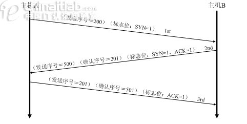
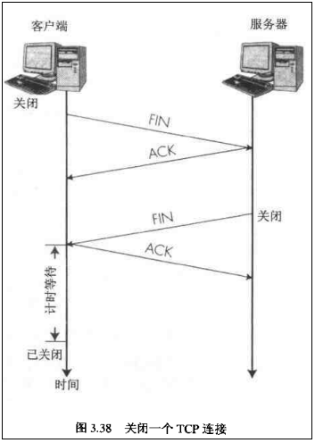

TCP的三次握手和四次挥手
1、TCP建立连接的三次握手过程
TCP会话通过三次握手来初始化。三次握手的目标是使数据段的发送和接收同步。同时也向其他主机表明其一次可接收的数据量（窗口大小），并建立逻辑连接。这三次握手的过程可以简述如下：
- 源主机发送一个同步标志位（SYN）置1的TCP数据段。此段中同时标明初始序号（Initial Sequence Number，ISN）。ISN是一个随时间变化的随机值。
- 目标主机发回确认数据段，此段中的同步标志位（SYN）同样被置1，且确认标志位（ACK）也置1，同时在确认序号字段表明目标主机期待收到源主机下一个数据段的序号（即表明前一个数据段已收到并且没有错误）。此外，此段中还包含目标主机的段初始序号。
- 源主机再回送一个数据段，同样带有递增的发送序号和确认序号。
至此为止，TCP会话的三次握手完成。接下来，源主机和目标主机可以互相收发数据。整个过程可用图2-4表示。

2、TCP释放连接的四次挥手过程
由于TCP连接是全双工的，因此每个方向都必须单独进行关闭。这个原则是当一方完成它的数据发送任务后就能发送一个FIN来终止这个方向的连接。收到一个 FIN只意味着这一方向上没有数据流动，一个TCP连接在收到一个FIN后仍能发送数据。首先进行关闭的一方将执行主动关闭，而另一方执行被动关闭。
TCP连接的拆除需要发送四个包，因此称为四次挥手(four-way handshake)。客户端或服务器均可主动发起挥手动作，在socket编程中，任何一方执行close()操作即可产生挥手操作。

TCP 标志位解释：
- SYN(synchronous建立联机)
- ACK(acknowledgement 确认)
- PSH(push传送)
- FIN(finish结束)
- RST(reset重置)
- URG(urgent紧急)
- Sequence number(顺序号码)
- Acknowledge number(确认号码)
参考资料：
http://www.cnblogs.com/BlueTzar/articles/811160.html